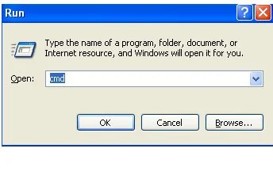
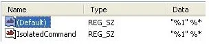

Now I know that there are a lot of techs out there that will run scan after scan until they find a program with the correct dat files to remove these viruses. But running those scans can take hours, and most of the versions of this virus are only a couple of files, which are fairly simple to remove and just takes a few minutes.
If you would, I would like for you to comment on this post where you find the viruses. I have been trying to notify web masters that their website is infected with a virus so that they can patch their hole and clean off the virus. Most web masters are unaware that they are propagating these viruses. According to Websense 79% of viruses come from legitimate web sites. With that being said let us being.
- This first step is the most difficult and may take you a couple of tries. The goal of this step is to log onto the computer, and press Ctrl Shift ESC (at the same time) before the virus loads. This will load the task manager, which will give you the ability to kill the virus as soon as it loads. You have to be quick about this. This step isn't always required but it makes your life easier.
-
When the task manager is open you need to go to the Processes tab and locate the virus EXE that is running. Normally the virus EXE is a random set of letters and numbers that doesn't make much sense. But in this case, the virus was called Ryg.exe. So you will want to highlight this process and press the end process button and select Yes as many times as it takes to kill the virus.
- Now the easy parts start. First we need to open the registry, but you have to open the registry in a special way. Since the virus normally changes how EXE's open on your computer, basically it changes it so no matter what EXE you click on it opens the virus instead.
-
To bypass the opening of the virus when you open the registry we need to open up a CMD (DOS prompt). Press the Windows Key R this will open a run prompt. In the run prompt type in CMD and press OK

- Next we will need to change the directory from the default to C:\Windows by typing in cd c:\windows
- Next we will need to rename regedit.exe to regedit.com by typing in rename regedit.exe regedit.com
-
Now we will open the registry by typing in regedit.com
-
Now that we are inside the registry, we need to navigate to:
HKEY_CLASSES_ROOT\exefile\shell\open\command -
Notice how the Default has a path to C:\Documents and Settings\NetworkService\Local Settings\Application Data\ryg.exe, that string is what runs the virus before any EXE is executed. Please note down the location of the virus so that in a later step it can be located and removed.

-
The Default should just be “%1” %* This is the default string to open EXE's. Basically you can just match it to the IsolatedCommand string in the same Key. So change the Default to “%1” %*

- Now that the Command Default has been fixed you can now open EXE's without fear of opening the virus again. Although, I recommend doing a search of the registry for any other entries of the virus. In this case do a search for ryg.exe and determine if you need to delete the string or change them back to their default. I would say just delete all of the strings, but when you do the search you will run into other sections that may have the Command Default that you would need to edit rather than delete. If you would like for me to expound upon this step, please let me know and I will.
- The next step is to find the original virus or rather the installation file of the virus. Normally the original virus adds itself to the startup of Windows so it is fairly simple to locate in msconfig
- To open msconfig press the Windows Key R and type in msconfig and select OK
-
Go to the Startup tab and locate EXE's that look to be different. They are normally located in temp folders in the user directories, and they have long names of just random characters. In this case, the original virus name is mifbbmrxsik.exe
- Please note where the file is located at, and then uncheck the box and press OK (Please note when you reboot the computer later it will come up with a message about msconfig, just check the box and press OK)
- Now it's time to go remove the virus files, or if you are weird like me you can save the files to decompile later (which I will do and post how to do it).
- The first one we will remove is mifbbmrxsik.exe as this is the installation piece of the virus, and also the easiest one to delete. You can open up My Computer and navigate to the location of the virus C:\Documents and Settings\Administrator\Local Settings\Temp\ackqvmsjg\ Now you can either just delete the virus, or my recommendation is to delete everything in C:\Documents and Settings\Administrator\Local Settings\Temp\ As the name suggests this is just a temp directory, and it really shouldn't contain anything important, so just delete all of the files and folders in there.
-
The second one we will remove is ryg.exe and this one is a bit trickier to remove. If you remember this virus is stored in C:\Documents and Settings\NetworkServer\Application Data but if you were to navigate to this folder you would not see ryg.exe even if you had enabled the view of protected operating system files and hidden files

- This is caused by the System and Hidden attributes being set on ryg.exe. To fix this open up another command prompt and navigate to C:\Documents and Settings\NetworkServer\Application Data
-
Now type in dir /a This will display all files in the Application Data direcotry which includes the virus.
dir Adobe Apple Google Microsoft PCHealth C:\Documents and Settings\NetworkService\Local Settings\Application Data> dir /a 583ajdg3vs2074475r23v5 Adobe Apple Google Microsoft PCHealth" alt="A screenshot of a Windows CMD windo with the following commands and output: C:\Documents and Settings\NetworkService\Local Settings\Application Data>dir Adobe Apple Google Microsoft PCHealth C:\Documents and Settings\NetworkService\Local Settings\Application Data> dir /a 583ajdg3vs2074475r23v5 Adobe Apple Google Microsoft PCHealth">
- You can view the attributes of ryg.exe by typin in attrib ryg.exe This will display that ryg.exe has an S and H flag set, which hides it from view.
- To remove these flags, type in attrib ryg.exe -S -H Now the virus should be viewable by doing either a dir or looking in My Computer
- From there you can highlight ryg.exe and delete it (be sure to empty the Recycle Bin after deletion though)
-
Now this is the step that I always forget to do. You need to make sure that Internet Explorer is not using any proxies to connect to the Internet. To do this, open Internet Explorer and go to Tools, Internet Options, select the Connections tab and then click on LAN Settings, and be sure to clear out any check boxes. Please note that some companies use a proxy, so this could be a bad thing on a company computer, but most home users don't use proxies.
 Settings open with the following settings highlighted and unchecked Automatically detect settings Use automatic configuration script Use a proxy server for your LAN (These settings will not apply to dial-up or VPN connections)")
- Final step is to reboot the computer. In theory when you log on you should be virus free.
Please feel free to ask any questions you may have, or if you want me to expound on any of the steps above. Also please comment about any websites that you find that have viruses on them. I will double check the website before notifying the web masters. I will also try to create a section that lists all of the websites that people have listed or that I have found, and in theory I will update the list with whether the web master has cleared the virus or not.